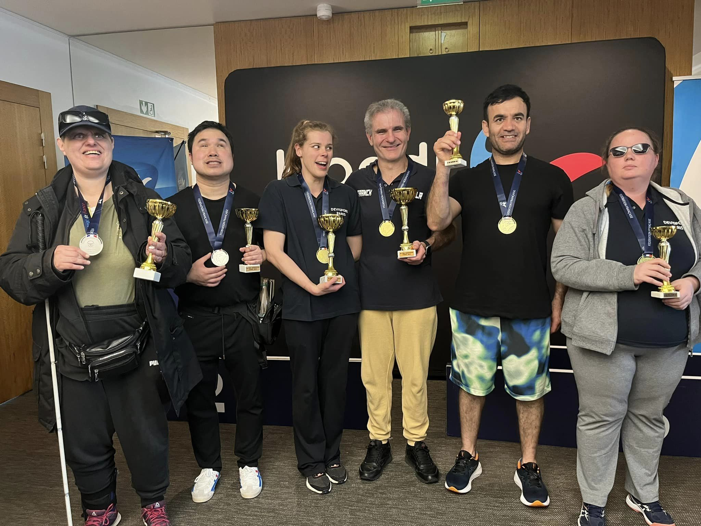
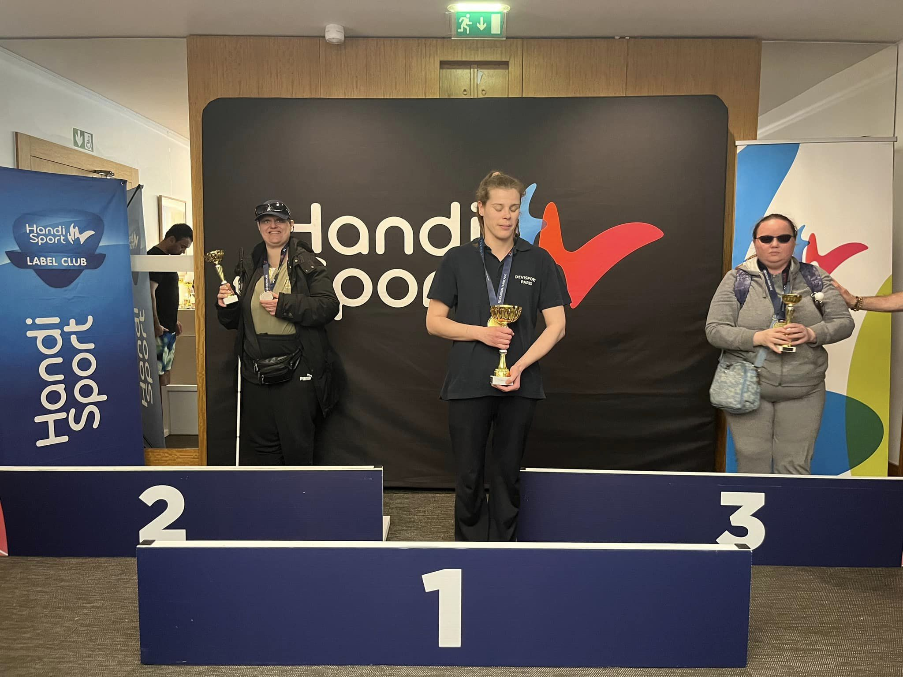

Dans le cadre de mon engagement pour l'inclusion et le soutien aux personnes en situation de handicap visuel, j'ai participé à l'organisation d'un tournoi de Division 2 de showdown. La compétition s'est déroulé au FIAP Paris situé au 30 rue de Cabanis 75014 Paris du 3 au 5 mai 2024.
Mes Rôles et Responsabilités
Accompagnement des Participants : J'ai accompagné les joueurs malvoyants et aveugles vers leur salle de jeu et leurs chambres, garantissant leur sécurité et leur confort tout au long du tournoi.
Gestion des Chiens Guides : J'ai veillé au bien-être des chiens guides, incluant des moments de détente, de promenade et de nutrition, permettant aux joueurs de se concentrer sur leurs matchs.
Assistance aux Repas : Pour chaque repas (petit déjeuner, déjeuner et dîner), j'ai préparé les plateaux-repas des participants, les ai accompagnés et leur ai décrit les options disponibles au menu.
Accueil des Participants : J'ai accueilli les participants, les ai enregistrés et les ai orientés vers leurs hébergements ou les salles de compétition.
Service des Boissons et Indication des Toilettes : J'ai assuré le service de boissons (café, thé, eau) et fourni des indications claires sur l'emplacement des toilettes et autres installations nécessaires.
 